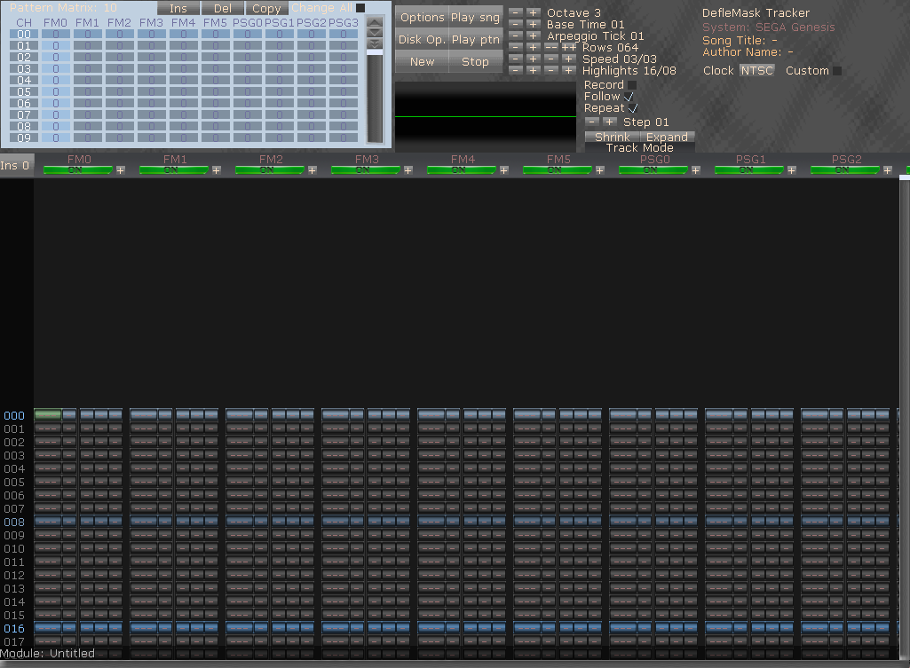

DefleMask was coded keeping in mind that every user has different visual preferences, so it is possible to customize the color scheme and the textures inside the Tracker.
In order to do this you have to follow 6 easy steps:
1. Enter to skins folder.
2. Copy "default" folder.
3. Rename your copy.
4. Edit the textures (you can change its resolution, but will be stretched by the tracker).
5. Edit colors.ini changing the RGB values of the colors.
6. If you want too, you can change the font.fdm file using DefleMask Font Converter on Data folder.
Enjoy!.